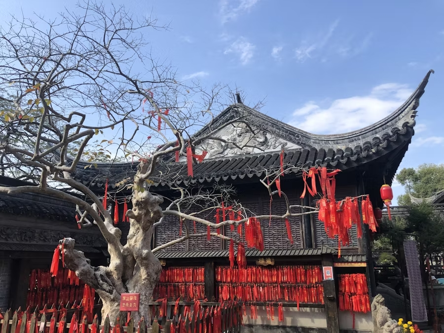
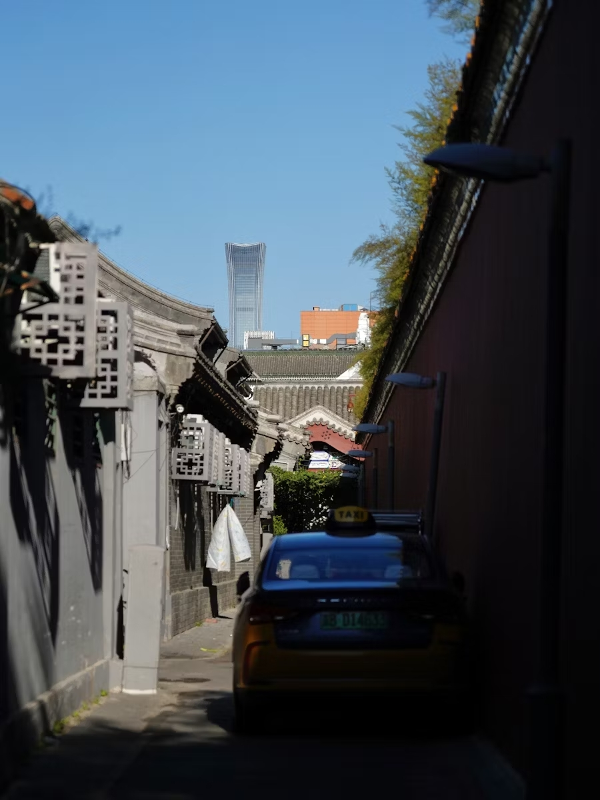

Chinese Styles & Materials
Design Elements and Materials in China
Chinese architecture traditionally uses timber frames, tiled roofs with upturned eaves, symmetrical layouts, and decorative elements like dragons, phoenixes, and guardian lions. These elements reflect cosmology, spirituality, and Confucian values of order and hierarchy.
 